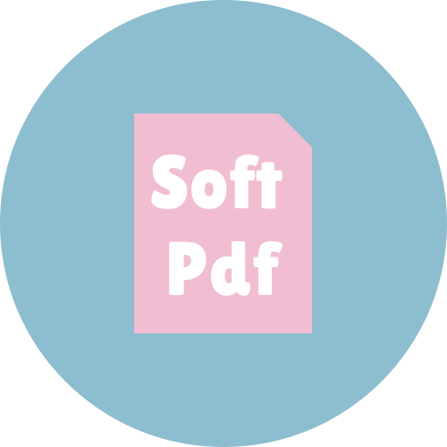

Export
← Back to Edit
Choose format
PDF (updated)
Word (.docx)
Images (ZIP)
Image format
PNG
JPEG
DPI
Export & Download
Your browser will ask where to save — that’s the correct “choose directory” flow on the web.
Heads-up
Word export quality is depend on the original Pdf structure.
Images export creates one image per page in a ZIP archive